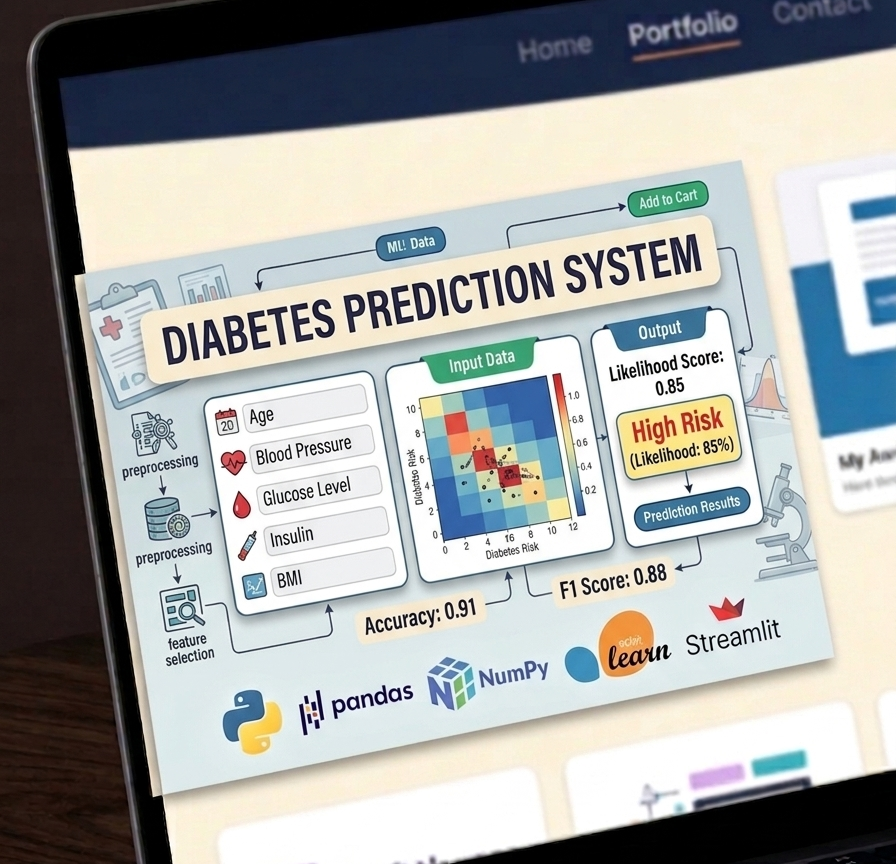
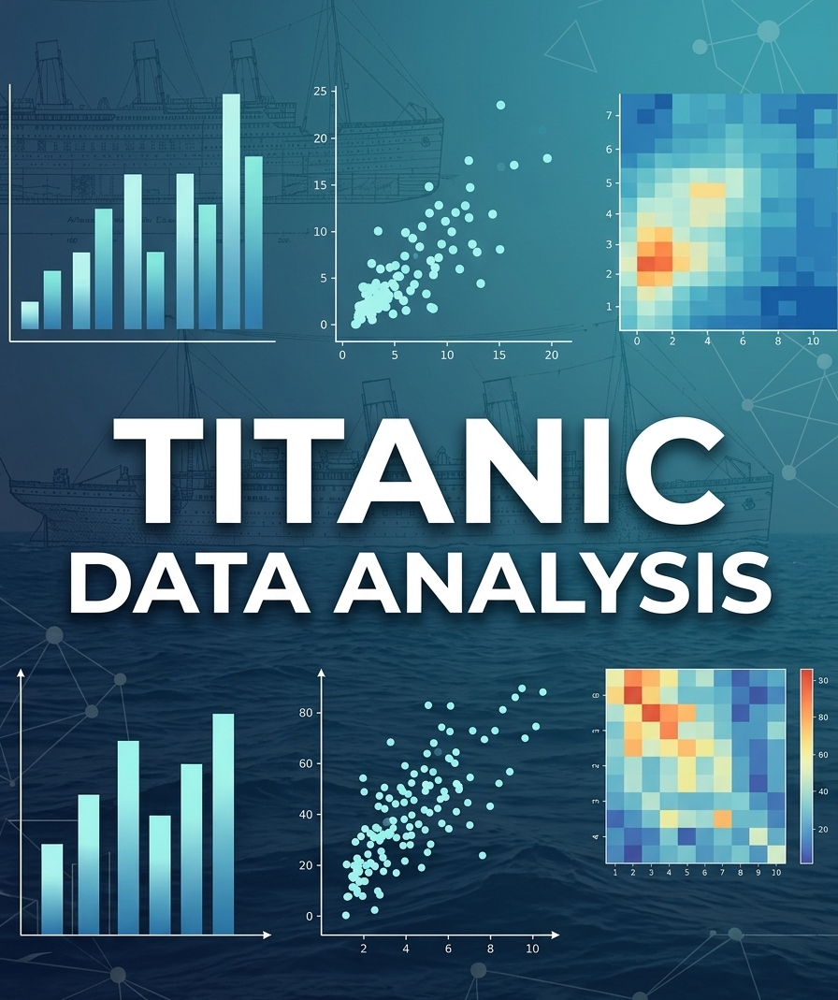

Hello, It's Me
Md.Abul Basher
And I'm a
If you have any exciting projects or opportunities, feel free to reach out. Let's create something amazing together!
Download Resume!
If you have any exciting projects or opportunities, feel free to reach out. Let's create something amazing together!
Download Resume!
I'm Md. Abul Bashar, an engineering student passionate about Data Analysis, Data Science, Machine Learning, and Artificial Intelligence. My journey into programming started with web development, but over time I developed a strong interest in working with data and building intelligent systems.
Applying data-driven techniques to analyze datasets, build models, and extract actionable insights using Python-based tools and libraries.
Experienced in analyzing real-world datasets using Pandas and NumPy. Skilled in data cleaning, exploratory data analysis (EDA), and extracting meaningful insights.
Building predictive models using Scikit-learn and deploying them with Streamlit for real-time intelligent applications.
Currently exploring neural networks and advanced models using TensorFlow and PyTorch to build intelligent AI systems.
Developing scalable web applications using Python & Django, focusing on backend logic, database integration, and system design.
Working with MySQL for efficient data storage, management, and retrieval in web applications.
Basic knowledge of HTML, CSS, and Bootstrap to build simple and user-friendly interfaces.
Strong foundation in Python along with basic knowledge of C, C++ and Java.

Built a machine learning model to predict the likelihood of diabetes based on medical data. The model was trained using real-world datasets and deployed using Streamlit for real-time prediction.
Tech: Python, Pandas, NumPy, Scikit-learn, Streamlit
Built a machine learning model to predict salary based on experience and education level. The model is trained using Linear Regression and deployed as an interactive web app using Streamlit.
Tech: Python, Pandas, Scikit-learn, Streamlit
